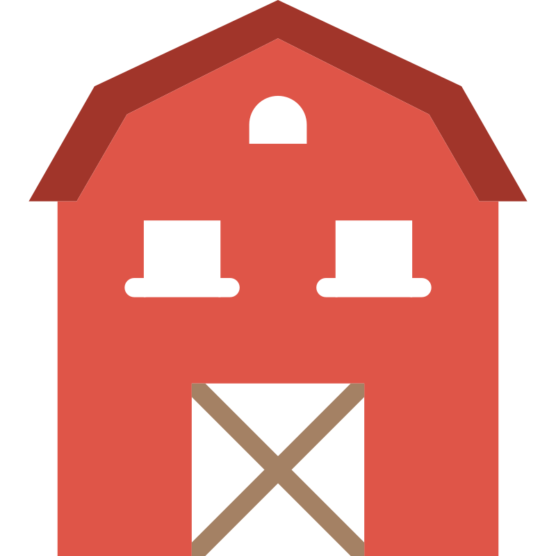
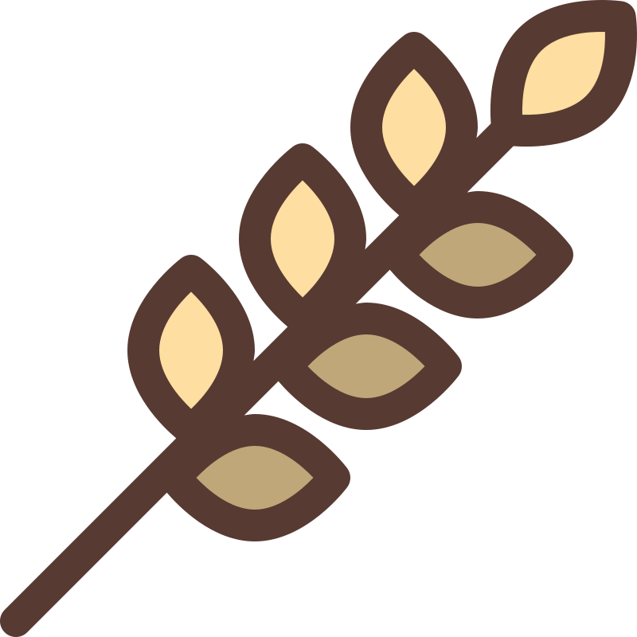
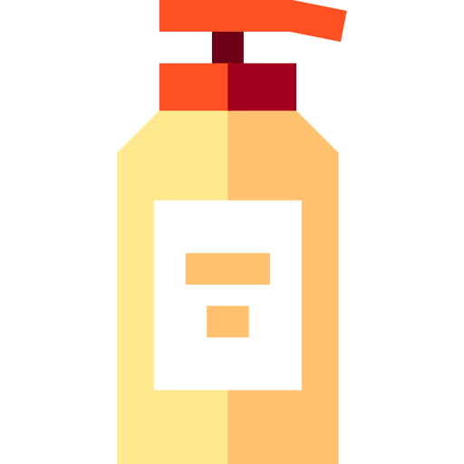

Shelter
Safe, weather-conscious spaces for rest and recovery.

Our Keralam Goshala was created with a simple purpose — to provide a safe, peaceful and caring environment for cows that need protection, nourishment and attentive care.Located in Edappal, Malappuram, Kerala, the goshala is built around the belief that every cow deserves dignity, compassion and a safe place to live.
What began with a commitment to care for vulnerable animals has grown into a place where their everyday wellbeing comes first. From nutritious food and clean water to comfortable shelter, hygiene and healthcare, we believe that meaningful care is built through the small things we do consistently every day.
Our journey is rooted in compassion and responsibility, supported by people who believe that animals deserve kindness, respect and a life of dignity.
Today, the Keralam Goshala continues to grow with the support of our caregivers, volunteers, well-wishers and the surrounding community — working together to create a better and more caring home for every cow entrusted to us.


A Keralam Goshala is more than a shelter — it is a community of people who choose to care.
From the people who look after the cows every day to veterinarians, volunteers and supporters who contribute their time and expertise, each person plays an important role in creating a safe and nurturing environment.
Our caretakers are at the heart of the hostel, ensuring that the cows are fed, their surroundings are clean, their health is monitored and their everyday needs are met. With the support of veterinary professionals, volunteers and the wider community, we work together to provide thoughtful and responsible care.

Safe, weather-conscious spaces for rest and recovery.

Regular access to suitable feed, fodder and clean water.
Veterinary support, treatment and health observation.

Cleaning and waste-management routines that support wellbeing.
Meet animals with gentleness, patience and respect.
Make care routines clear, accountable and dependable.
Communicate impact, needs and limitations honestly.
Choose practical approaches that can endure over time.
Protect dignity and reduce avoidable distress.
Invite people to learn, participate and help responsibly.